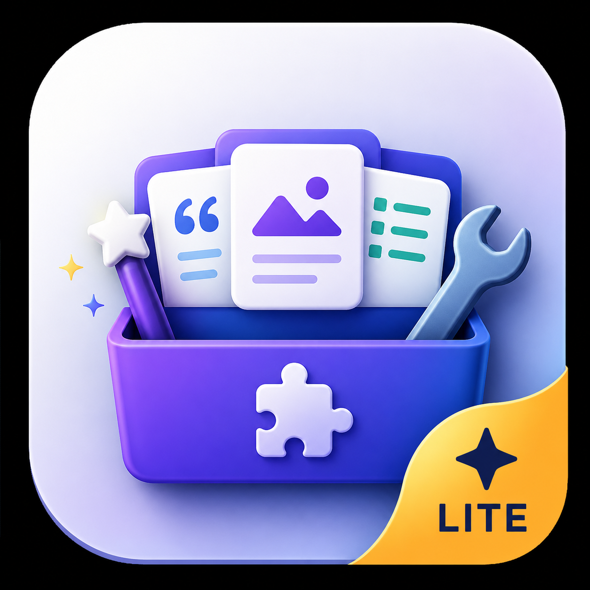
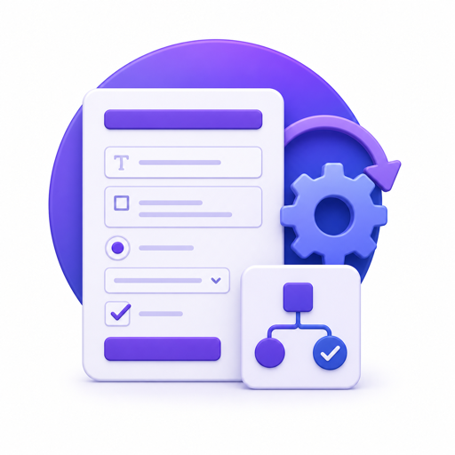
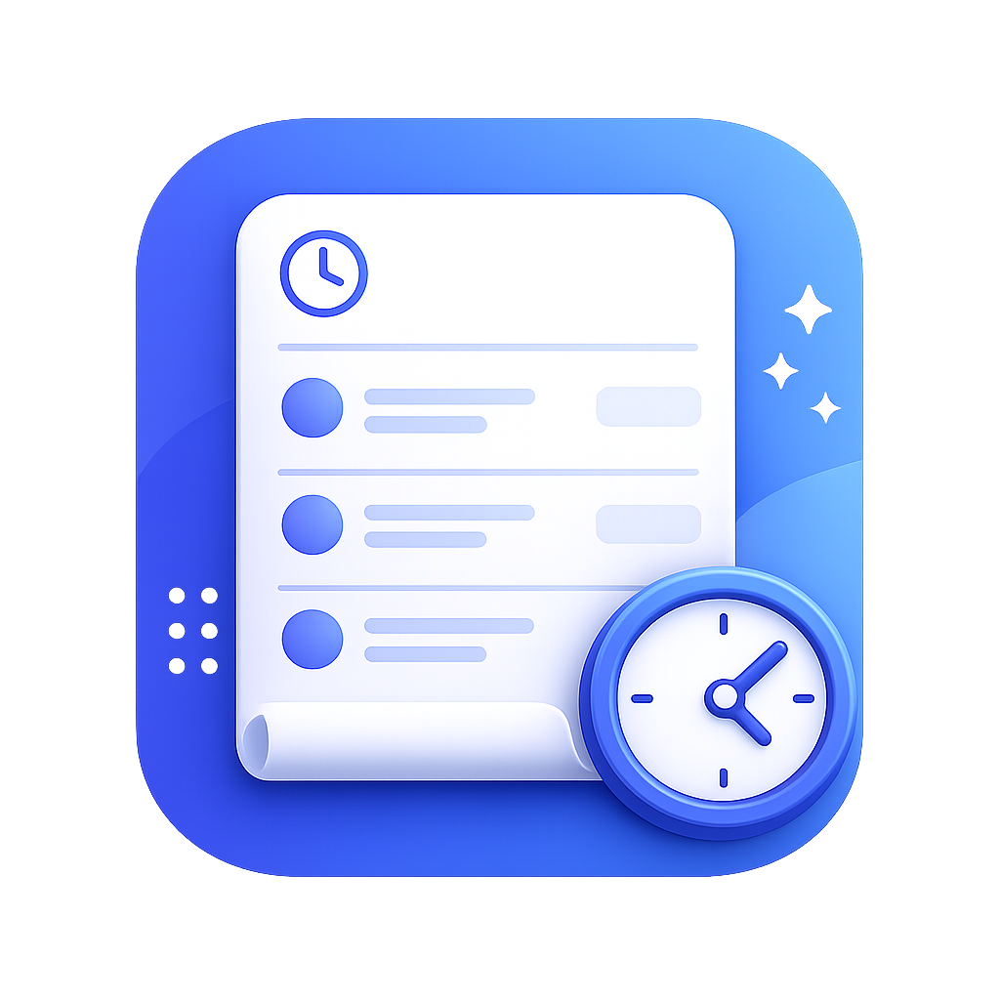

Macro Toolkit
for ConfluenceLIVE
15 macros for pages that do more — Mermaid, PlantUML, draw.io and Excalidraw diagrams, polls, mood boards, charts, markdown, Swagger/OpenAPI viewers, carousels, and more.
Documentation Hub
Vectored builds production-grade apps for Atlassian Confluence & Jira, VS Code, and the command line — macros, forms, automation, and API tooling used by teams every day.
Everything ships with full documentation, a support channel, and Marketplace-managed billing where applicable.

15 macros for pages that do more — Mermaid, PlantUML, draw.io and Excalidraw diagrams, polls, mood boards, charts, markdown, Swagger/OpenAPI viewers, carousels, and more.

Visual form builder with 13 field types, theming, access control, multi-section navigation — and a post-submit automation canvas that creates Confluence pages, opens Jira issues, and posts to Slack or Teams.
Peer recognition that lives in Confluence and Jira — a live mural of kudos cards with templates, company values, GIFs, reactions, rich email notifications, and page embedding.

Time tracking that lives inside Jira — log against hierarchical cost centers and issues, route entries through per-project approvers, manage leave and holidays, lock past periods, and report on it all with native worklog sync.

API development, testing, and documentation without leaving your editor — plus a scriptable CLI for CI pipelines.
Peer recognition that lives where your team already works — a live mural of kudos cards in monday.com, with templates, company values, GIFs, reactions, email notifications, and recognition straight from a board item.
Screenshot and screen recording for documentation — capture a region of any tab as PNG, a high-quality GIF or MP4, annotate and redact it, and file it straight into a local project folder with a metadata timeline. Completely offline, with no account and no subscription.
BYOAI* — Bring Your Own AI. These products work with an AI provider you already use: plug in your own API key (or connect your own AI assistant, in API Studio's case) and AI requests go to that provider under your own account and terms. You choose the provider, and usage is billed by them — never through a Vectored plan. Tiles marked Supports AI have AI features; Recognition Hub for Confluence uses Atlassian-hosted AI, so no key is needed there.
Front Door — customizable landing pages and portals for Confluence spaces.
Want early access or to influence the roadmap? Tell us what you need.
Macro Toolkit and Forms extend the pages your teams write every day — diagrams, data collection, and automation without leaving Confluence.
Forms automation creates and updates Jira issues from submissions today; dedicated Jira apps like Time Log are on the roadmap.
API Studio brings request building, testing, and doc generation into the editor, with a CLI that slots into any CI pipeline.
Recognition Hub brings peer recognition into monday.com — a live kudos mural, templates, and recognition straight from a board item.
Lens installs from the Chrome Web Store and runs in Chrome and Edge — capture, annotate, and file screenshots and recordings, fully offline.
Our Atlassian apps are built on Forge, Atlassian's managed cloud platform — designed so your data and permissions stay under your control.
App logic and storage run inside Atlassian's cloud — no third-party servers holding your content.
Actions are checked against the author's real Confluence and Jira permissions — at save time and again at execution.
Execution logs for every automation run, published security and privacy policies, and open documentation.
A monitored support channel and docs that stay in sync with every release — not an abandoned wiki.
Create your first form in minutes.
Forms — AutomationConditions, batches, Jira, Slack & Teams.
Forms — EmbeddingPut forms on any Confluence page.
Macro Toolkit — All MacrosThe full catalog, macro by macro.
Macro Toolkit — MermaidDiagrams as code on Confluence pages.
API Studio — OverviewExtension and CLI documentation.